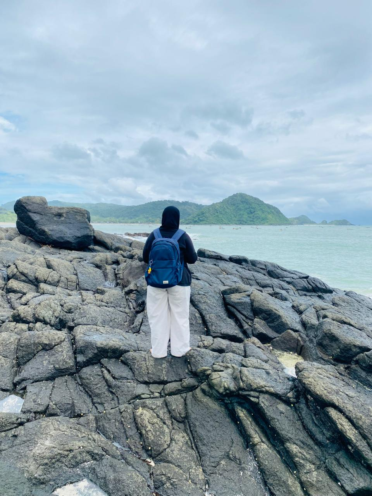
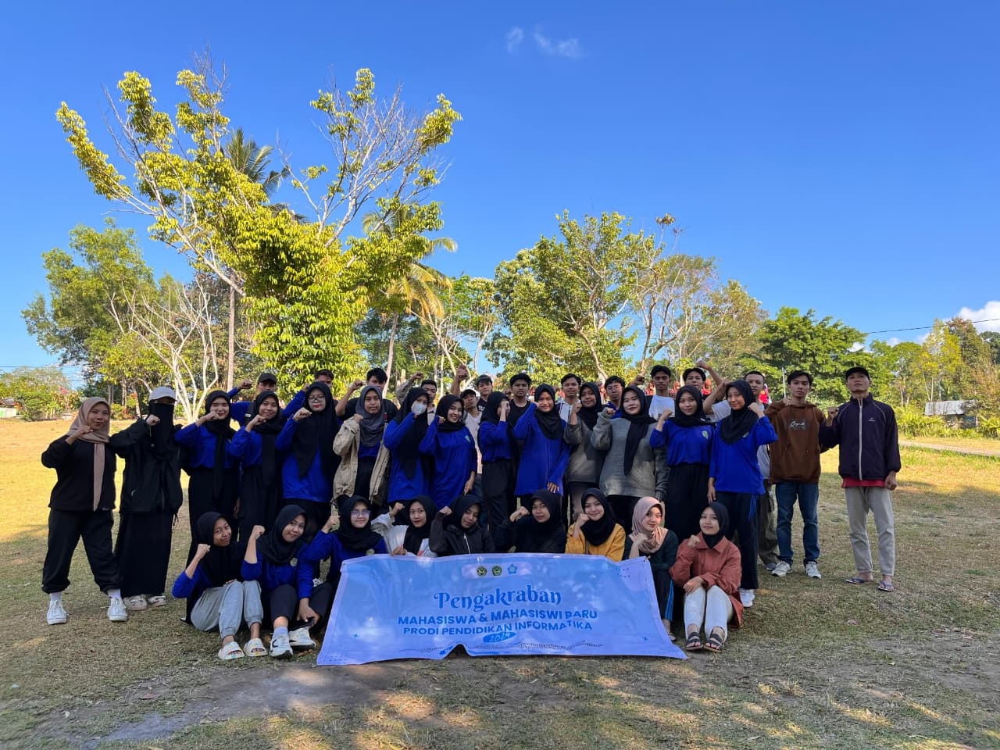
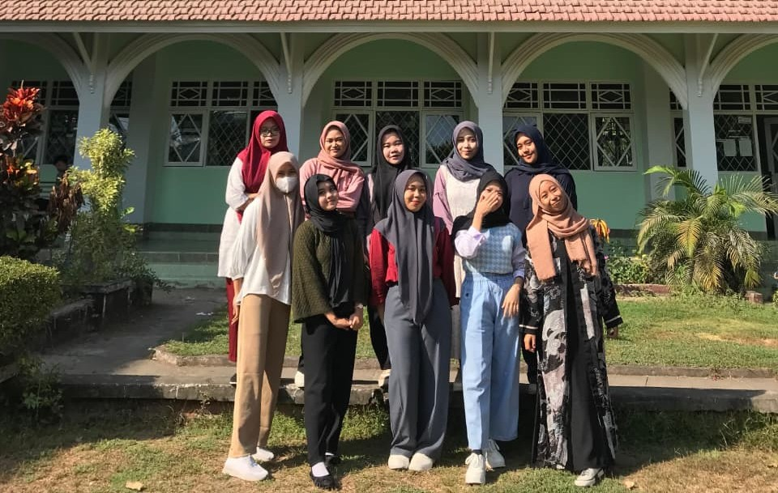

Profil
Halo... Nama saya Baiq Suji Fatia Sari
Saya adalah mahasiswa aktif di Universitas Hamzanwadi yang memiliki dedikasi dan minat tinggi dalam mengintegrasikan teknologi ke dalam dunia pendidikan.
Saya adalah mahasiswa aktif di Universitas Hamzanwadi yang memiliki dedikasi dan minat tinggi dalam mengintegrasikan teknologi ke dalam dunia pendidikan.




Perkenalkan, saya Baiq Suji Fatia Sari, mahasiswa Pendidikan Informatika yang memiliki ketertarikan pada teknologi, pengembangan website, dan media pembelajaran digital. Selain aktif mengembangkan kemampuan di bidang informatika, saya juga senang mengikuti berbagai kegiatan organisasi, sosial, dan mengeksplorasi tempat-tempat baru. Website ini saya buat sebagai media untuk memperkenalkan diri, berbagi pengalaman, dan menampilkan proyek yang telah saya kerjakan.

Aplikasi FisikaKu merupakan salah satu proyek yang saya kembangkan sebagai bentuk kontribusi dalam dunia pendidikan. Proyek ini dibuat untuk menyediakan materi fisika yang mudah diakses, dipahami, dan dipelajari kapan saja.

Data Pinjaman Buku merupakan proyek yang saya kembangkan untuk mempermudah pengelolaan data peminjaman dan pengembalian buku. Melalui sistem ini, data anggota, buku, serta riwayat peminjaman dapat dikelola dengan lebih rapi, cepat, dan efisien. Selain itu, proyek ini juga menjadi sarana untuk mengembangkan kemampuan saya dalam pembuatan aplikasi web dan pengelolaan basis data.